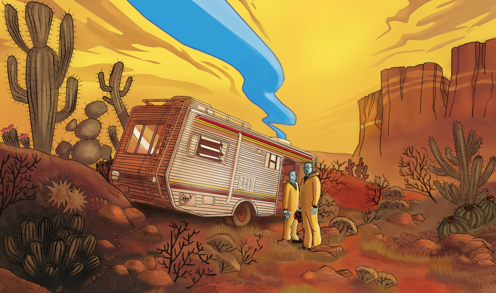
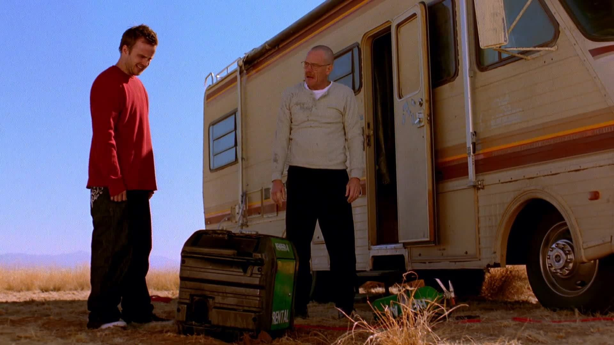
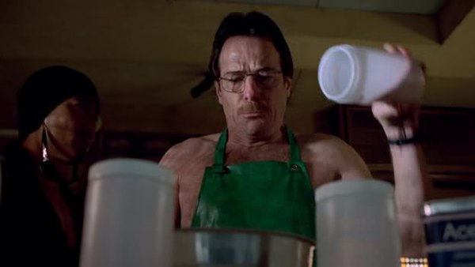
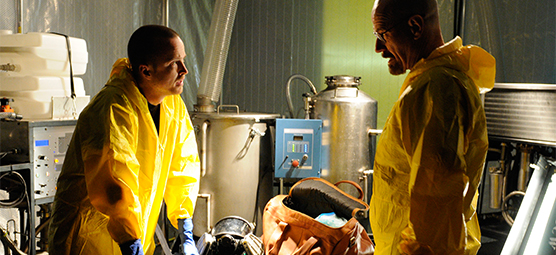
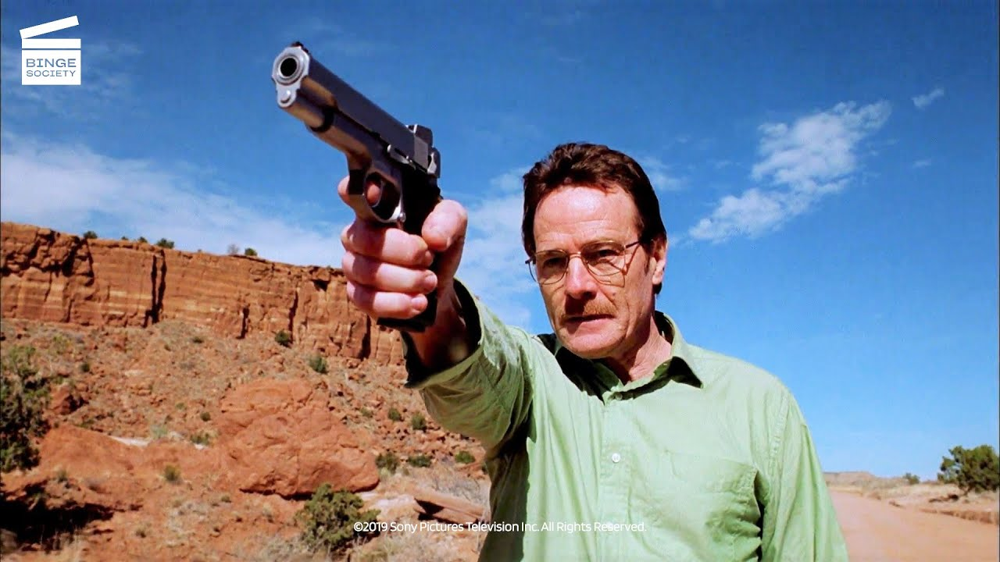
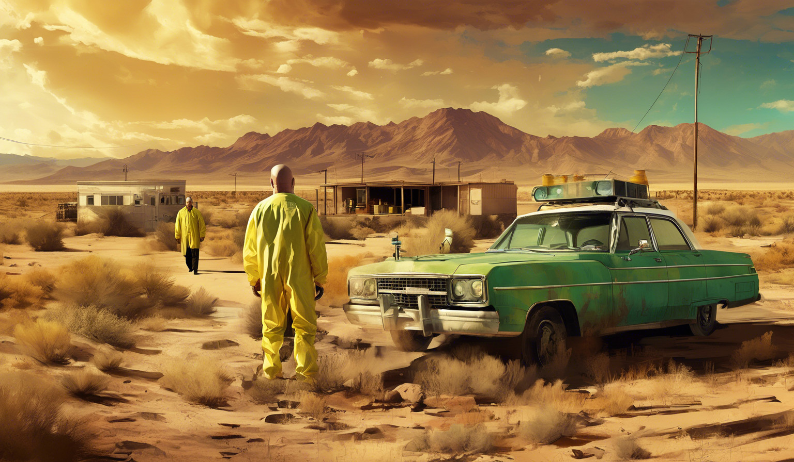

Breaking Bad is a American television drama series created by Vince Gilligan.

Walter White is a high school chemistry teacher who turns to manufacturing methamphetamine to secure his family's financial future.

Walter White is a nuanced character who transforms from a sympathetic family man to a morally ambiguous drug kingpin.

This series explores the bond that forms between Walter White and Jesse Pinkman as they make methamphetamine.

Walter White face many challenges including suicide and consequences of making methamphetamine.

As the epsidoe "Cat's in the Bag" concludes, Walter and Jesse lock up two dead bodies in their minivan.